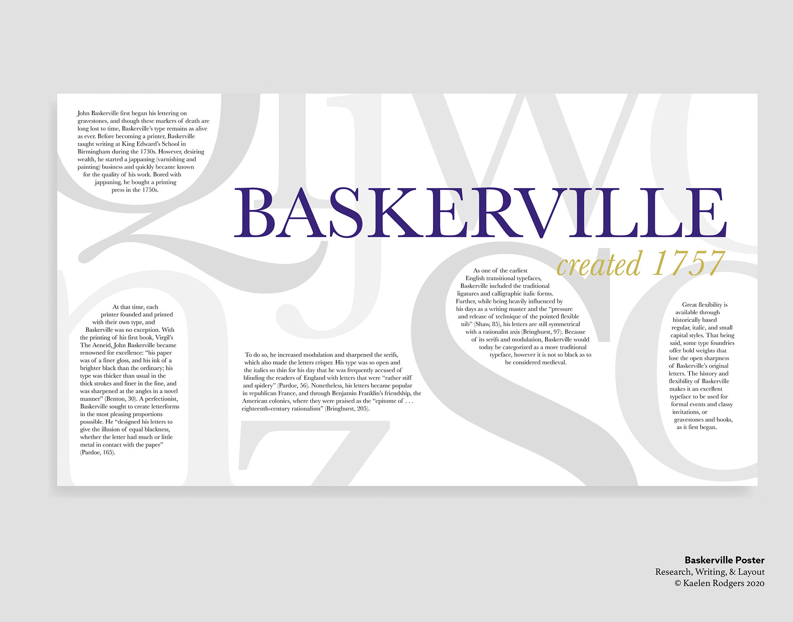

Portfolio - Kaelen Rodgers


Jan Tschichold Museum Installation
This project was created as the final project for my History of Graphic Arts class. The assignment was to choose a graphic designer to research, then create a creative presentation of the information. I chose Jan Tschichold, a typographer and book designer. After initial research I sketched potential ideas that would highlight Tschichold’s experience in typography and extensive book work. As I was most excited about the potential for a large-scale exhibit, I pursued that idea in creating comps and discussing with my professor and classmates. Originally the pieces of the display were going to be constructed of images of Tschichold’s work and book pages, however I switched to vinyl for readability. With research completed I worked to arrange text and example images into forms I could use to make a large design in the same style as Tschichold’s. Throughout the project I learned the importance of researching materials early on in the process and viewing reference images throughout the project. I also learned that I really enjoy working outside the bounds of the average magazine or poster and doing something on the larger end at times.

Collide
This year I am part of Birrama Creative, a student led design team at Taylor University that creates promotional material for campus events. In addition, they produce a magazine, Collide, every year that focuses on the intersections of culture and art on campus. I was asked to be lead designer and organizer of the project. This included leading meetings, assigning sections to each designer, communicating with the content team, setting and managing deadlines, proofing, and sending files to print. The collaborative aspect of this project allowed for discussions about the content and feel of the magazine throughout the process. I really appreciated the chance to take more of a leadership role in the project while still collaborating and designing for the magazine. I learned that frequent follow ups are important to meet deadlines and was reminded just how important clear, concise instructions are.
Baskerville Informational Poster
This poster, focusing on the inspiration for and creation of the Baskerville typeface, was created for a Typography class. The most important piece of the assignment was that it featured examples of the chosen typeface while also displaying our research on the topic. I created many different renditions focusing on one or two letterforms each but eventually decided on a horizontal orientation as it would allow for more space to display Baskerville’s letters and echo the dimensions of the header. I chose the letters to be displayed in such a way that the text blocks would fit while also emphasizing the finer details of the letterforms. I really enjoyed working on this work as I learned about the early processes of creating typefaces in greater depth. I also learned a lot from the challenge of fitting all the information necessary in the limited space given between letterforms. Finding a balance between having space and creating elegant shapes can be tricky to walk but is always worth the extra effort.

Wayfarer
This magazine was designed as part of a university class that covered layout design and preparing files for printing. I designed a magazine about travel and culture and included sections on population change, seeing beauty in different settings, and world news. Once I had decided which sections to include in my magazine and mapped the initial layout plan, I sketched potential ideas for spreads. Due to the fast-paced nature of the project, I moved quickly from sketching to creating spreads for the magazine. I really enjoyed finding unique ways to pair images and text as well as coming up with ways to create both continuity and diversity between the different sections of the magazine. I learned a lot about proper procedure in preparing files for press and how to ensure color and image quality.


Parnassus Promotional Poster
Every year the English department at Taylor University publishes Parnassus, a journal of literature and art produced by Taylor students. I was asked to create a promotional poster for the call for submissions. My clients asked for something that would display Mount Parnassus while displaying the appreciation for beauty the publication represents. After sketching possibilities for portraying the mountain, I produced several options for my clients to choose between. They chose the design with the rounded mountains and asked me to create two versions: one “day” and one “night.” I designed the two posters in a variety of color schemes which I then discussed with my clients. This project highlighted the importance of sketching and providing multiple options as it adds to the opportunity for discussion and improvement on the designs.
Parnassus Editorial Layout
Given my work on the promotional posters and the high praise they were given, I was also asked to design the internal layout for the Parnassus publication. It is an 8 inch by 8 inch square with a combination of images of various sizes, poetry, and prose. Each of the 82 accepted submissions needed its own creative solution due to creative differences in the authors or artists and the differing lengths of written pieces. In addition to the basic layout of the book, I was also responsible for capturing the peaceful aesthetic of the publication while conserving space and ensuring that all images were prepared for printing. While already familiar with Adobe InDesign, my extensive time working on this project greatly increased my speed and technical knowledge of the program. I also learned the importance of content proofing both before and designing.

Indy Pop Identity Campaign
This identity campaign was the project for a class in which each of my classmates and I were to rebrand a small soda company based in Indianapolis, Indiana. Indianapolis is often referred to as “Indy” by locals, which is how I decided on the name “Indy Pop” for my project. After choosing a new name, I began with the logo design, working to design a mark that would capture the heart of an soda company: energetic, simple, and fun. After settling on a logo, I moved to stationary. I chose the motif of bubbles to emphasize the energy and youthfulness of the brand. The bright colors seek to highlight the openness and bright warmth that should come with a soda company. I continued to utilize these colors and the bubbles throughout product design and advertisements. Over the semester I learned the depth required in research for a rebrand and the wide variety of uses placed upon logos and brand motifs. I also learned about many of the considerations needed when designing product packaging.


Tales of the Jazz Age
I designed this book dust jacket as part of my History of Graphic Arts class, in which we walked through different eras of graphic design and made projects based on different artistic movements such as Victorian, Art Nouveau, Modernism, and for this project: Art Deco.